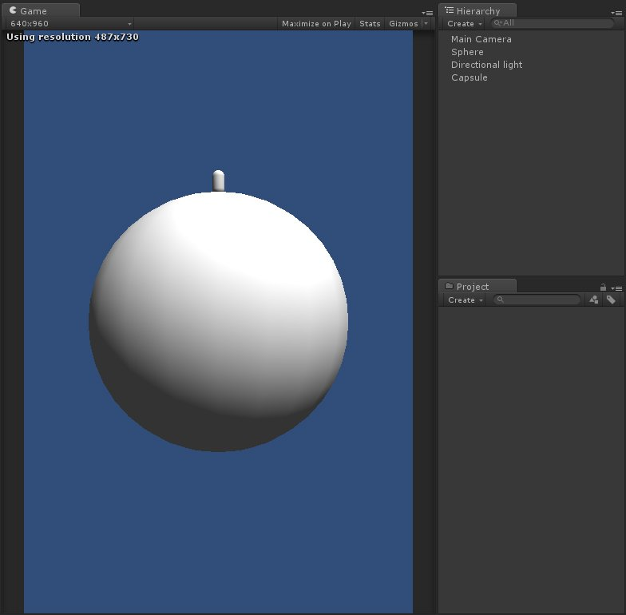
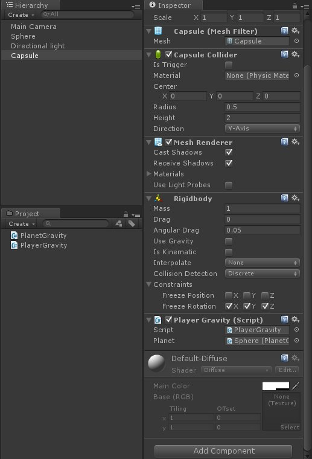
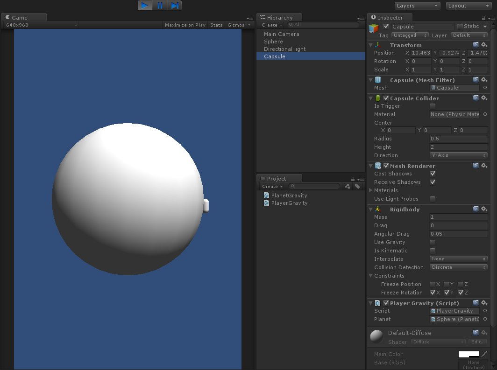
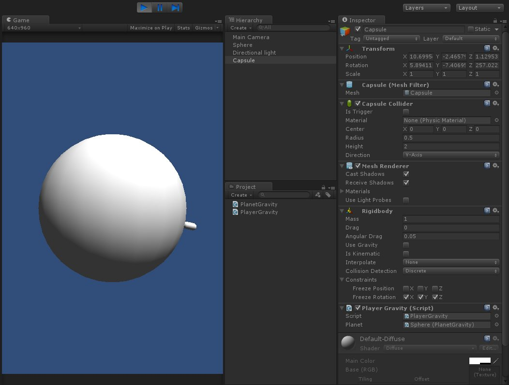
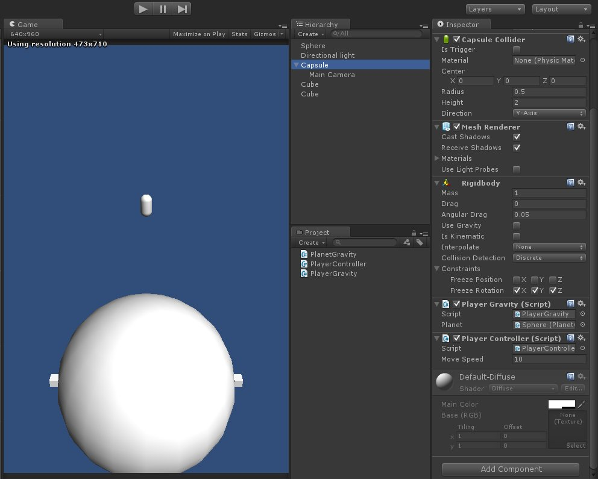
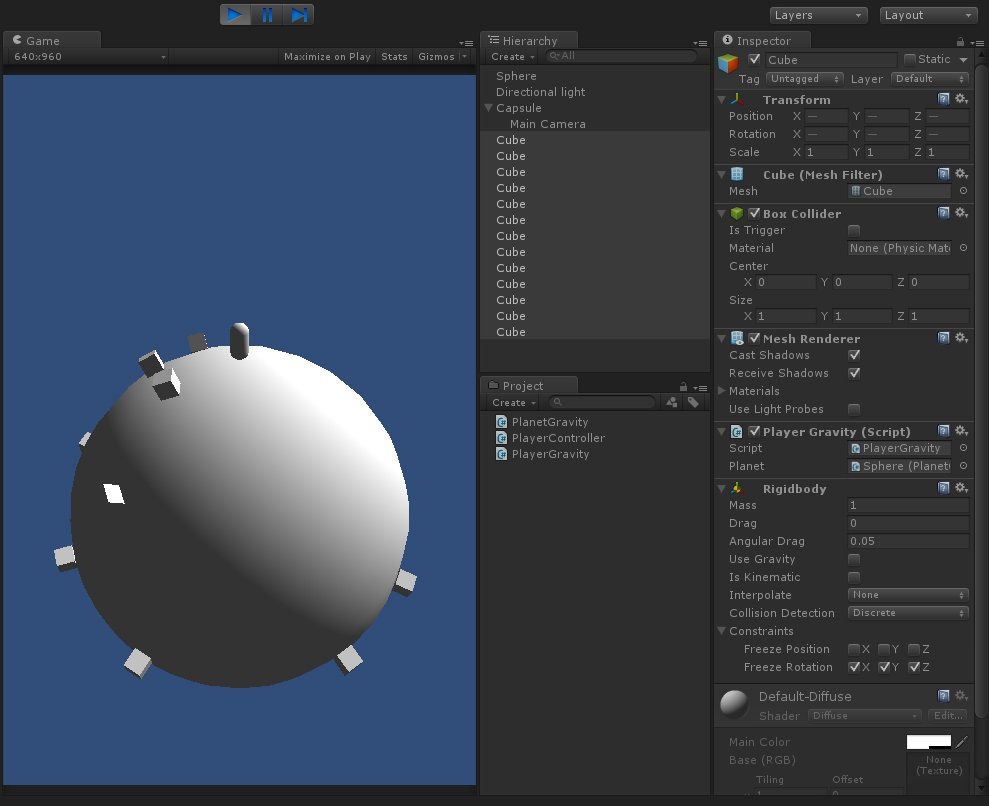

中午吃飯時，突然發想要怎麼模擬像七龍珠裡的界王星@@
趁還有記憶就趕快把它記錄下來
上網查詢了一下也已經有人做成英文視頻教學
有興趣的可以看英文版練英文聽力XD
Unity Tutorial: Faux Gravity (walk on planets)
首先在場景中創建適合大小的 Sphere 模擬星球
接著創建代表玩家的 Capsule

完成基本物件創建後
開始來寫程式腳本
建立 PlanetGravity.cs 腳本
using UnityEngine;
using System.Collections;
public class PlanetGravity : MonoBehaviour
{
//The gravity of the planet
public float gravity = 10;
private Transform m_transform;
void Awake()
{
m_transform = transform;
}
public void AddGravity(Transform targetObject)
{
//The gravity direction of the planet
Vector3 gravityDirection = (targetObject.position - m_transform.position).normalized;
//Add the gravity to the target object
targetObject.GetComponent<Rigidbody>().AddForce(-gravity * gravityDirection);
}
}這個腳本目前單純用來產生星球重力
利用 RigidBody.AddForce 這個API
來產生對物體中心的力
以此來模擬星球重力
接下來建立 PlayerGravity.cs 腳本
using UnityEngine;
using System.Collections;
public class PlayerGravity : MonoBehaviour
{
public PlanetGravity planetGravity;
private Transform m_transform;
void Awake()
{
m_transform = transform;
}
void Update()
{
planetGravity.AddGravity(m_transform);
}
}在 MonoBehaviour.Update() 中對物體產生重力
賦予 Sphere 物件 PlanetGravity.cs
賦予 Capsule 物件 PlayerGravity.cs 及 Rigidbody
設置如下

開始遊戲並嘗試拖拉 Capsule 物件
發現已經有重力產生了
但 Capsule 物件並不會隨重力的角度改變

回到 PlanetGravity.cs 腳本來增加一些修改
using UnityEngine;
using System.Collections;
public class PlanetGravity : MonoBehaviour
{
//The gravity of the planet
public float gravity = 10;
private Transform m_transform;
void Awake()
{
m_transform = transform;
}
public void AddGravity(Transform targetObject)
{
//The gravity direction of the planet
Vector3 gravityDirection = (targetObject.position - m_transform.position).normalized;
//Add the gravity to the target object
targetObject.GetComponent<Rigidbody>().AddForce(-gravity * gravityDirection);
//Change the up direction of the target object to the reverse direction of gravity
Vector3 targetUpDirection = targetObject.up;
Quaternion targetRotation = Quaternion.FromToRotation(targetUpDirection, -gravityDirection) * targetObject.rotation;
targetObject.rotation = Quaternion.Slerp(targetObject.rotation, targetRotation, Time.deltaTime * 100);
}
}接下來就會發現物體會與重力的角度而有相對的變化

星球重力已經完成了
來讓玩家可以在上面做簡單的移動
建立 PlayerController.cs 腳本
using UnityEngine;
using System.Collections;
public class PlayerController : MonoBehaviour
{
public float moveSpeed = 10;
private Transform m_transform;
private Vector3 m_moveDirection;
private Rigidbody m_rigidBody;
void Awake()
{
m_transform = transform;
m_rigidBody = GetComponent<Rigidbody>();
}
void Update()
{
m_moveDirection = new Vector3(Input.GetAxis("Horizontal"), 0, Input.GetAxis("Vertical")).normalized;
}
void FixedUpdate()
{
m_rigidBody.MovePosition(m_transform.position + m_transform.TransformDirection(m_moveDirection) * moveSpeed * Time.deltaTime);
}
}將 PlayerController 腳本賦予 Capsule 物件後
我們更改 Camera 的位置
讓他可以跟隨 Capsule 物件

最後可以擺上各種物件
來做各種模擬
